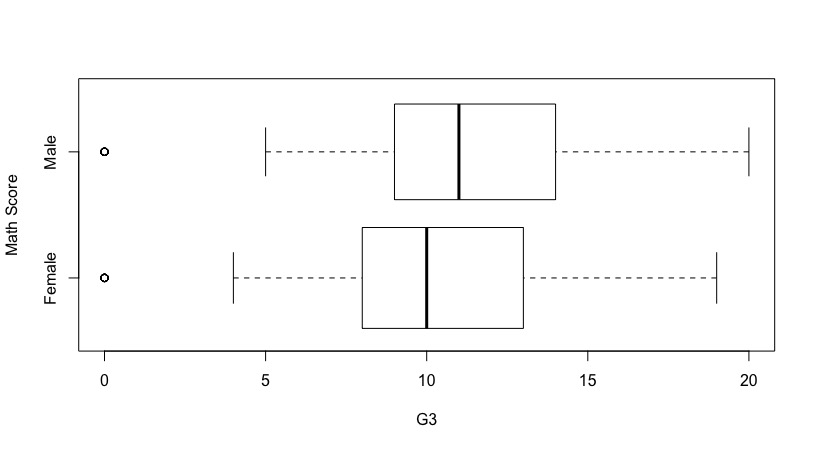
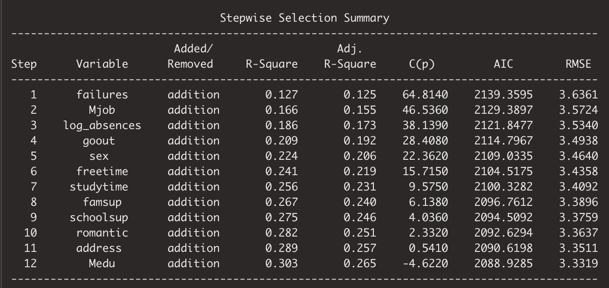
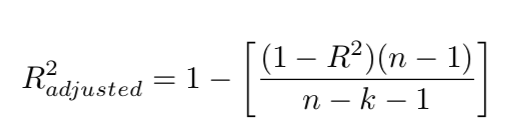
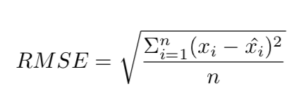
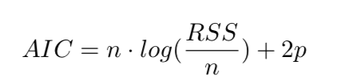
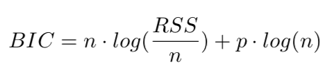
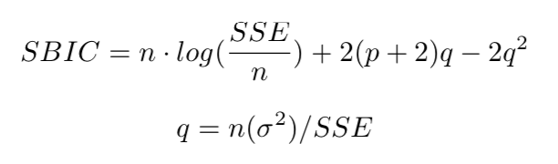
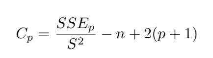

Consumer Studies


More studies to be added ⋅⋅⋅
Social Studies


More studies to be added ⋅⋅⋅
More studies to be added ⋅⋅⋅
More studies to be added ⋅⋅⋅
2019
Math grades of students
at two Portuguese
secondary schools
30 variables
demographic
educational
relational
time management
495
R
olsrr
Stepwise regression
Math performance in school is a result of the push-pull of many factors at play. In this group project, we used stepwise regression to filter out insignificant factors and came down to the formulas shown below to dissect the factors that explain the math score. While performing model selection, we used AIC and BIC to detect any overfitting.
Math score ~ previous failure + mother’s job + log(absences+1) + going out frequency + gender + amount of free time + amount of study time + having family educational support + having extra educational support
Previous poor performance is a strong predictor of future performance at math. Having family educational support or having extra educational support such as tutoring are also an indicator that the students need extra help and in the short run they may still have poor math scores. Going out 3 times a week and more free time (non-study time) are related to lower math scores
More study time helps. Being a boy helps! Absence was transformed into log, because it is heavily skewed when the majority of students have 0 absences and only very few students have any absences. Log of absence actually actually has a positive coefficient to math scores. Mother’s profession, if in health, is a big push to math scores and civil service helps too. But if mother is a teacher, it is negative to the math score.
Below are distribution views of math score to check if this is a normal distribution and if we need to transform it.

The 9-regressor model can explain 27.45% of the math score. That means even if one may have previous failures and are getting all the help or one is simply a girl, there are still a lot of other factors that can help with bumping up math score.
How do we decide on how many and which regressors to choose to build the model? We use stepwise Forward and Backward selection and rely on statistical model selection metrics to measure at what point the model is overfitting.
R-square or Adjusted R-square going up means more percentage of the outcome can be explained by the variables included in the model. AIC, SBIC, Cp going down means lower information loss with that model. At some point, both upward and downward curves are tapering off toward horizontal, which indicates the benefits of including more variables are diminishing and it is time to stop there. SBC zigzags upward because this metric penalizes heavier on the including of more variables. It comes down to a trade-off of how much you want to explain versus how many regressors you include in the model.
The beauty of statistics is that it is the child of math and data. Math abstracts, simplifies and boils things down to a few symbols and relations among them. Data is messy, unruly and in our time gigantic, with outliers, confounders, and multicollinearities. Statisticians often seek the fine balance between two forces: Theory and reality, clarity and complexity, parsimony and delicacy.
Below I want to show the abbreviated model selection metrics and starry concepts formulated by generations of mathematicians or statisticians to help define that fine balance.
R-squared: regression explained reality.
Adjusted R-squared: the complement to unexplained residual-reigned reality, with a twist to adjust for the degree of freedom, taking the number of regressors into account.
n is the number of observations. k is the number of predictors or regressors. In below formulas, p is used as predictor symbol.
RMSE: Root Mean Square Error, measuring how far off the predicted stays from the reality.
x_i is the data point from reality. x_i-hat is the predicted value.
AIC: Akaike Information Criterion, measuring the information loss.
RSS is Residual Sum of Squares, which again measures how far off prediction from reality, in the second degree.
BIC: Bayes Information Criterion. In R, it was called SBC. It also measures the information loss, but with log(n) which penalizes heavier on complexity than AIC, which has a constant 2 in front of the predictor value.
SBIC: Sawa's Bayesian Information Criterion
SSE: Sum of Squared Errors is the same as RSS on AIC formula or spelled as SSR. It also measures the information loss with complexity penalty.
Cp or C(p) is mallow's Cp. Same intention, different conception.